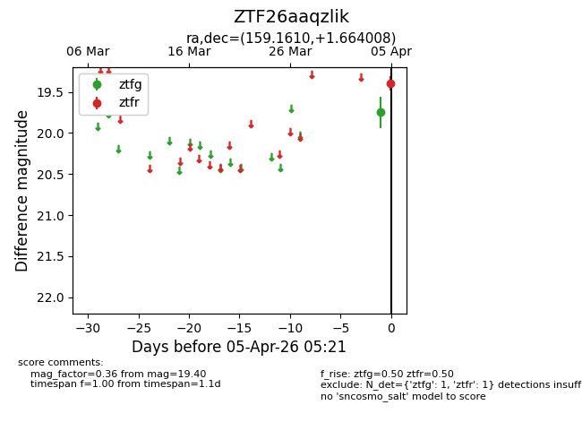
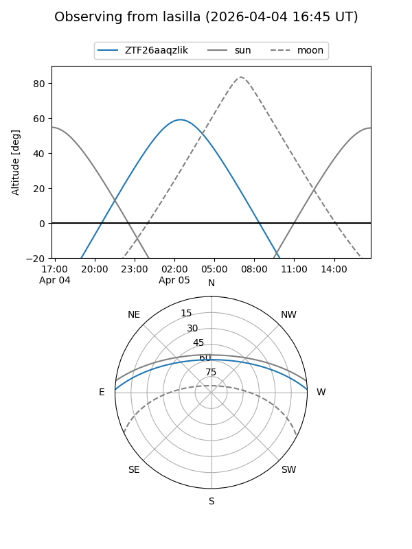
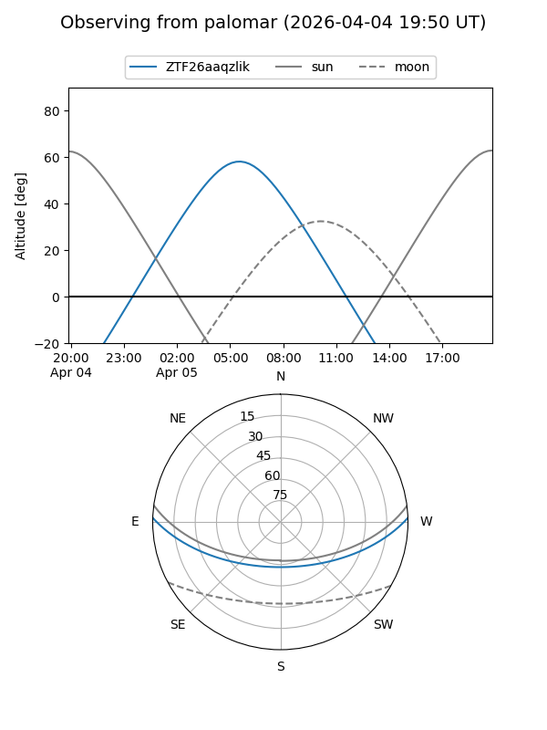
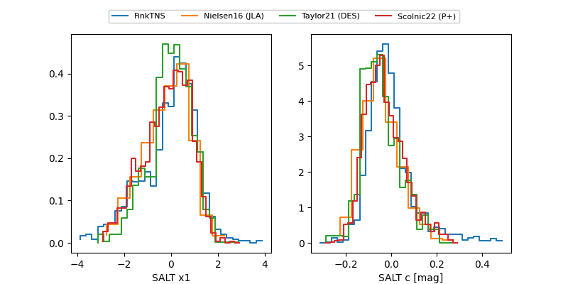

ZTF26aaqzlik
Target ZTF26aaqzlik at 2026-04-05 05:25
Aliases and brokers:
FINK: link
Lasair: link
ALeRCE: link
alt names
ZTF26aaqzlik (ztf,fink_ztf)
Coordinates:
equatorial (ra, dec) = 159.1610,+1.66401
equatorial (HMS+DMS) = 10:36:38.63,+01:39:50.43
galactic (l, b) = (245.4355,+48.88323)
Flags:
Photometry:
last ztfg=19.75, ztfr=19.40
1 ztfg, 1 ztfr detections
Lightcurve

Visibility


Additional plots
